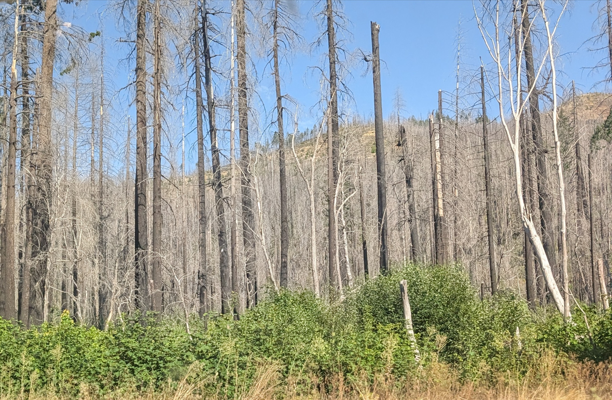
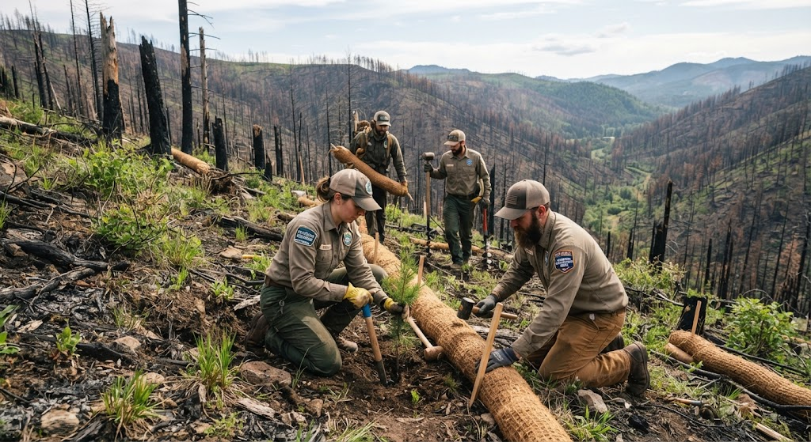
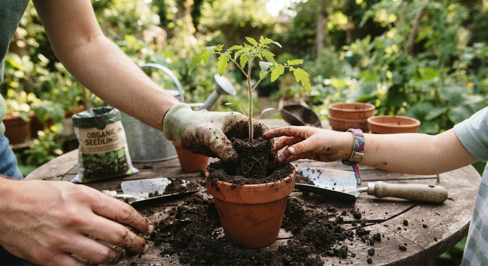
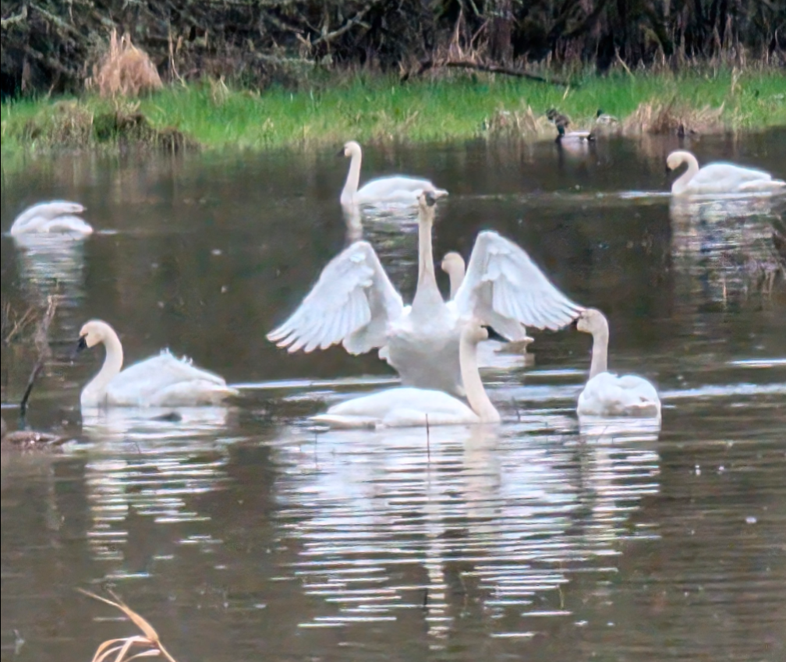

wounded forest
Field activities targeting debris removal and site restoration.

Watershed Assessment
Initial site evaluation following wildfire impacts.

Seedling Planting
Reintroducing native species to accelerate post-wildfire recovery.

Clean Watersheds
For a healthy happy environment.